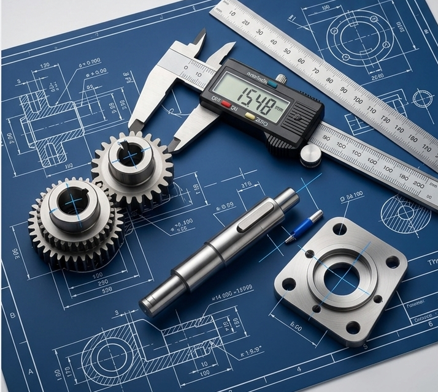

Réparer une pièce mécanique ou concevoir un support sur-mesure demande une précision au millimètre. Une erreur de mesure de 2 mm et la pièce ne s'emboîte plus.
Pas de panique ! Voici comment devenir un expert du relevé de mesures, même sans être ingénieur. Une bonne préparation en amont est la garantie d'un projet réussi du premier coup, évitant ainsi les itérations inutiles et le gaspillage de matière.
I. Les outils indispensables
Pour obtenir un résultat professionnel, il faut s'équiper un minimum. Voici le trio gagnant :
Le Pied à Coulisse
C'est l'outil roi. Il permet de mesurer les diamètres intérieurs, extérieurs et les profondeurs avec une précision de 0.1 mm.
Le Réglet
Plus précis qu'un mètre ruban, il est idéal pour les longueurs planes. Attention toutefois aux erreurs de parallaxe lors de la lecture.
II. La méthode de la "Photo de face"
Une erreur courante est de prendre une photo en perspective (de biais). Cela déforme les dimensions réelles de l'objet.
III. Quelles cotes nous envoyer ?
Ne perdez pas de temps à tout mesurer ! Concentrez-vous sur les points de contact et les contraintes d'assemblage :
- Les entraxes : La distance entre le centre de deux trous (crucial pour la fixation).
- L'épaisseur totale : Pour garantir la solidité mécanique de la pièce.
- Les diamètres : Précisez s'il s'agit d'un trou (passage de vis) ou d'un axe plein.
Le saviez-vous ?
En impression 3D, nous appliquons toujours un "jeu de tolérance". Le plastique se rétracte légèrement en refroidissant. Pour qu'une tige de 10 mm entre dans un trou, nous concevons souvent ce dernier à 10.2 mm. C'est pour cela qu'une mesure précise de votre part est la clé d'un assemblage parfait.
Vous hésitez encore ?
Contactez-nous pour des conseils personnalisés.
Nous analyserons votre cahier des charges pour vous conseiller le duo Technologie + Matériau gagnant.